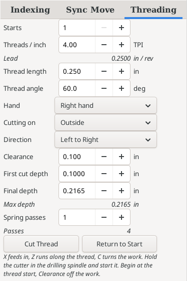

Axes Colors
| Color | Axis | Movement Control | |||||
| Neg | Pos | Neg | Pos | ||||
| Yellow | X | U | A | 
| 
| 
| |
| Red | V | B | 
| 
| |||
| Blue | Z | W | C | 
| 
| 
| 
|
| Black | Spindles (Sp0 & Sp1) | 
| 
| ||||
On this page, the axis letters are colored to assist the user. (Note: LinuxCNC does not allow for a Y axis when running as a lathe.)
Every axis has a row of controls on the user screens, but only the axes selected for use can be operated - the others are grayed out. For example, in the screen shown below, the user has selected to use the X, Z, U, V, W, and C axes, so the A and B rows are grayed out.
The table at the bottom of the user screen titled, Axis Assignments, shows the current axis assignments. It is updated the next time Rosetta is started after the selected axes are changed.
|
|
Threading Tab

The Threading tab is used to cut threads with any number of starts.
This uses a Rosetta threading routine which cuts the same passes as LinuxCNC's G76 threading cycle. (G76 itself cannot be used on Rosetta, because it expects the work to be turned by the Sp0 spindle, and here it is turned by the C axis.) It uses a multi-pass approach: the first pass cuts to the First cut depth, and each following pass goes that much deeper again, until the Final depth is reached. With more than one start, each start is cut to full depth before C turns to the next start.
You can also set the number of spring passes. These are passes at full depth made after the thread has been fully cut, and are used to smooth out the cuts.
You can also notice in this screen that I have reconfigured the spindle to be the C axis. Sp0 cannot be used for this operation.
The axes used are: X, Z, & C. The cutter is driven by a drilling spindle.
Data Entry
| Field | Data Description | Value Saved? |
| Starts | Select the number of starts you wish to use. 1 is typical, but it can be any integer value (though I wouldn't go too high). | Yes |
| TPI | Select the number of starts you wish to use. 1 is typical, but it can be any integer value (though I wouldn't go too high). | Yes |
| Thread Length | Enter the thread length. This is the distance you want threads to be placed onto the piece. | Yes |
| Thread Angle | Enter the thread cutter’s angle. This is only used to calculate the maximum thread depth. 60° cutters are most commonly used, but 90° and even 120° cutters are also seen. | Yes |
| Handedness | Select if the threads are right handed (standard) or left handed. | Yes |
| Inside or Outside Threads | Select if you are cutting the threads on the inside of a piece, or the outside. This determines how the cutter is pulled away from the piece between passes. | Yes |
| Direction | Select the direction of the cutting: left to right, or right to left. | Yes |
| Clearance Distance | Set the clearance distance. This is how much the cutter is placed away from the piece before starting, and is used for pulling the cutter away from the piece when re-positioning it. | Yes |
| 1st Cut Depth | Set the first cut depth. This should be driven by the material’s hardness. | Yes |
| Final Cut Depth | Set the final cut depth. The maximum this can be is calculated based on the cutter’s thread angle. | Yes |
| Spring Passes | Set the number of spring passes. These are passes made using the cutter at full cutter depth, and are used to clean up any cutting from the final cut depth pass. It is generally recommended that this not be too high as it can also damage the threads already made. | Yes |
As you complete these entries, you will see a message just above the buttons at the bottom which identifies the total number of passes which will be made.
Cut the Threads
For this operation,
- C is used to rotate the piece being threaded (AKA, the spindle)
- Z moves the cutter through the cutting cycle
- X moves the cutter into / away from the cutting
The steps are:
| Step | Action |
| 1 | Ensure the Z axis moves in a way that is parallel to the spindle’s axis of rotation. |
| 2 | Install a thread cutter into the cutter holder (usually a drilling spindle), and ensure it is running in the correct direction. |
| 3 | Position the cutter at the start of the cut (Z axis). |
| 4 | Ensure the cutter is the distance away from the piece noted in the Clearance value (X axis). |
| 5 | ENAble the X, Z, and C axes.
If any of them is not enabled when you click Cut Thread, Rosetta asks whether to enable it (see ENA). |
| 6 | Once you click Cut Thread, everything will happen automagically.
As the cuts are being made, a message will appear below these buttons which indicates which pass is being performed. Also, the image on the Preview screen will indicate what is happening. |
After Cutting the Threads
You can click Return to Start if you want to reposition the cutter back to the beginning.